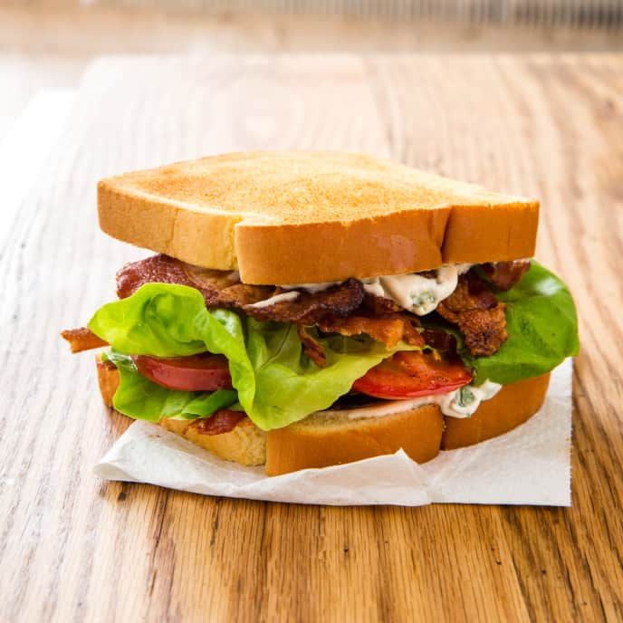

Bacon Basil Tomato Sandwich

A modified take on the classic bacon, lettuce and tomato sandwich. This creation makes a few minor tweaks that snowball into big flavor results.
This recipe is the foundational sandwich, but it doesn't have to end here. Adding sliced turkey was a well liked modification in the bistro this sandwich was served. Adding a grilled chicken breast would also be more than appropriate. A slice of white cheddar cheese can also add another kick if the mood strikes you.
Replacing the widely used lettuce with a pile of fresh basil leaves is the superstar move that makes this sandwich special. In addition, peppercorn aioli replaces plain mayo, and instead of cooking your bacon the old fasion way, our bacon gets candied with the addition of brown sugar. Sound weird? Well, you're wrong.
Ingredients
- 2 thick cut slices of white bread
- 8 large fresh basil leaves
- 6 slices of thick bacon
- 4 slices of fresh roma tomatos
- 2 Tbsp mayo
- 2 tsp fresh cracked black peppercorns
- 2 Tbsp brown sugar
- melted butter for brushing
Steps
- Mix mayo and fresh cracked peppercorns, set aside
- Cook your bacon in the oven at 400 degrees, times will vary, desired doneness will vary. The key here is when the bacon is aproximately 60% of the way cooked through, briefly pull it out of the oven and evenly cover it with the brown sugar. Place back in the oven and finish cooking to desired doneness
- Brush bread with butter, both sides, and place on a flat top grill or thick bottomed pan and cook until golden brown, flip bread, and cook otherside until golden brown
- Time to assemble. The proper order is bread, half of your peppercorn aioli, bacon, basil, tomatos, and finally the second piece of bread that also has peppercorn aioli spread on it
- Thats it! A relatively simple sandwich that brings a lot to the table, Enjoy!